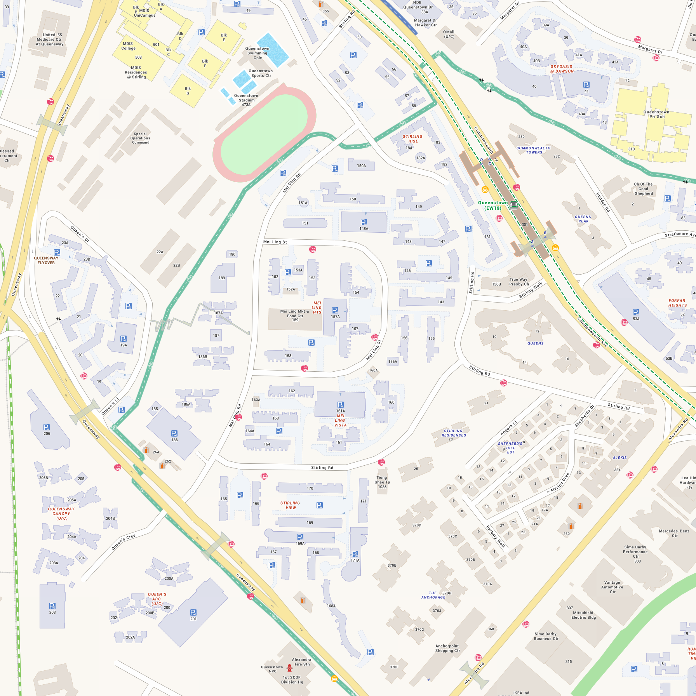
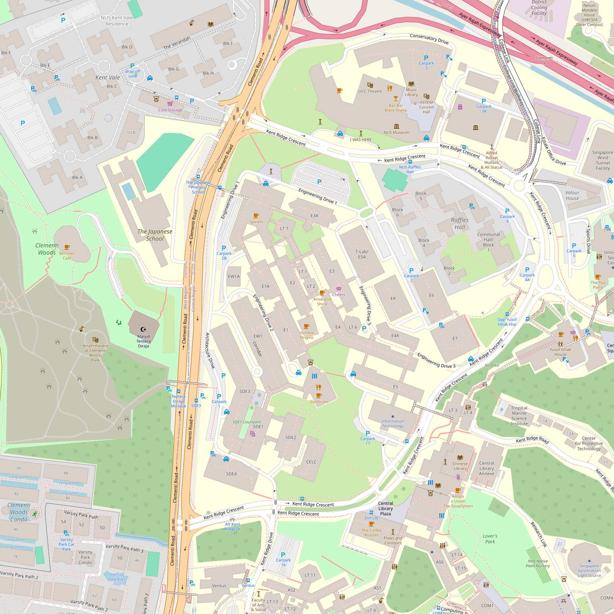

A Unity wayfinding app with flight-tracker AR camera view, elderly-first safety routing, GPS telemetry recording, and real-time path data collection for Queenstown Estate and NUS Engineering campus.
Designed for robust, accessible, and scalable spatial computing.
Runtime dynamic switching between Queenstown Estate and NUS Engineering contexts, instantly swapping maps, graphs, and destinations.
Optimized A* routes with ETA display, focused on elderly safety profiles and wheelchair accessibility over intricate local and OSM graphs, with stable auto-route behavior after map-area switches.
Future-ready architecture for continuous map integrations, targeting OneMap's Barrier-Free Access (BFA) API to provide safe, realistic routing profiles for wheelchair and elderly users.
Designed to scale with OneMap's demographic and spatial APIs, including Reverse Geocoding, SVY21/WGS84 Coordinate Converters, Population Queries, and Planning Area boundaries.
Comprehensive keyboard simulation controls enable laptop-first path testing, while the runtime driver now switches to real GPS + compass data on-device when simulation mode is off.
Automated Unity cache-building, testing loops, and KML generation via portable Python CLIs with repo-relative defaults. Play-session recording auto-keeps the latest 5 MP4 sessions.
Real-time walk-time estimates based on configurable speeds (1.0 m/s elderly, 0.8 m/s wheelchair) shown in the simulation overlay, including cached/hysteresis route reuse states.
Enhanced CSV capture with altitude, floor estimation, GPS accuracy, and loss detection. Auto-screenshots on heading changes and intervals capture the real walking environment.
Automatic photo capture at turns (>30° heading change) and every 10 seconds while walking. GPS coordinates embedded in filenames for easy geotagging. Manual Snap button for notable features.
Point your phone toward any destination to see its name, distance, and ETA floating on the camera feed. No ARKit or ARCore needed — uses GPS, compass, and gyroscope. Features a live AR Status HUD and a Sync Gyro button to recalibrate the view to your holding angle.
Testers walk real paths and record labeled GPS trails from A to B. Recorded paths are stored locally as JSON, ready to be ingested into the graph to replace synthetic routes.
Clean compact overlay showing only essentials: destination, path recording, route info. Full debug diagnostics hidden behind a toggle for developers.
APK ships only the minimum required files. Graphs, locations, boundaries, routing profiles, and optional map assets sync from Google Drive and update automatically every 15 minutes, while optional Street View assets stay outside the Unity bundle.
The Share button invokes the Android share intent to send telemetry CSVs, GPS trail JSONs, and crash logs via external apps — no USB cable required (fully supports Android 7+ via custom FileProvider).
Instantly bypass the exponential smoothing filter with the Snap GPS button when you obtain a first fix, skipping the slow convergence loop so you can reliably auto-route from your true coordinates right away.
Comprehensive integrations planned with Singapore's authoritative national map data.
Endpoints: /maps/tiles/{Style}/{z}/{x}/{y}.png & /api/staticmap/getStaticImage
Native SG maps with highly accurate building footprints in Default, Night, Grey, and Original styles up to zoom level 19. Useful for caching local atlases and building standalone AR reference minimaps.
Endpoints: /api/public/bfa/route & /api/public/routingsvc/route
Provides specialized wheelchair routing by avoiding stairs, curbs, and steep inclines. General routing supports standard walk, drive, transit, and cycle pathing.
Endpoints: /api/common/elastic/search & /api/public/revgeocode
Translates Singapore postal codes, localized building names, and blocks into precise geometrical bounds or coordinates for dynamic AR destination placement.
Endpoints: /api/public/themes/retrieveTheme & /api/public/popapi/getPlanningarea
Direct token access to over 100+ public amenity datasets (e.g., polyclinics, public parks, hawker centres) allowing the ecosystem to populate contextual POIs dynamically along a user's route.
Endpoints: /api/auth/post/getToken & /api/public/revgeocode
Secure JWT-based access supporting conversions between local SVY21 coordinate formats and standard WGS84 Lat/Lng values returned by device sensors.
A complete wayfinding companion that downloads data from Google Drive on first launch, calculates safe routes, and lets testers record real walking paths to improve the graph.

Generated atlas + graph routing used by the AR runtime environment.

NUS Engineering campus graph with 424 nodes and 1,080 edges.
Get up and running locally with the Wayfinding ecosystem in minutes.
Install Unity Hub and Editor 2022.3.62f3 with Android/iOS modules. Install Python 3.9+ for data generation scripts.
pip install -r requirements.txtRun the automated script to utilize our fingerprint cache system for rapid iterative testing.
python scripts/unity_cached_builder.py --launch-editorBuild the map atlases automatically using our data generation pipeline.
build_engineering_nus_map.batBuild the APK, install on a tester's phone, and use the Rec: ON/OFF toggle in the Quick Start overlay to gather GPS & route telemetry as CSV. Latest verified APK output is ~32 MB.
python scripts/unity_cached_builder.py --force --target Android --output Builds/Android/CDE2501-Wayfinding.apkCommon issues and straightforward solutions.
Status: Successful on 2026-04-14.
Artifact: Builds/Android/CDE2501-Wayfinding.apk (33,513,760 bytes).
Tip: If multiple Unity editors are installed, pass --unity-exe "C:\Program Files\Unity\Hub\Editor\2022.3.62f3-x86_64\Editor\Unity.exe" to avoid wrong editor selection.
Commit: e44c51c (2026-04-14).
Update: Quick Start overlay moved to a responsive GUILayout layout, simulated object driving now uses real GPS/compass on device when simulation is off, and AR camera mirroring was hardened.
Check: Sim Mode is true and Main Camera is present.
Action: Press F5 for manual recalc, then move with WASD.
Check: Active scene might be Untitled.
Action: Stop Play mode, open Assets/Scenes/Main.unity, and hit Play again.
Check: Device sensor state overlays.
Action: On laptop, toggle simulation mode F2. On mobile, enable Location Services and calibrate the device compass.
Check: Follow-heading mode is active and the user rotates.
Action: Interaction mapping fix is applied (click/hover/zoom/pan now align with heading). If any visual overlay drift remains, toggle follow-heading off as a temporary fallback.
Check: Quick Start map area changed recently.
Action: Area switch resets location-readiness and restarts a single startup wait; press F5 to force a manual recalc if needed.
Check: Quick Start shows Map Area: NUS Engineering; in Editor, toggle simulation with F2 if needed.
Action: Area switch re-anchors simulation world mapping and force-snaps to the selected graph after reload; toggle area once and wait for auto-route refresh.
Check: Quick Start status line Start node: ME → ... should show a NUS_... node while in NUS area (not QTMRT).
Action: Start-node context resets on area switch with area-specific defaults; switch area again and let auto-route run once.
Check: Initial NUS route has matching start and destination (for example NUS_E1 → E1).
Action: Initial auto-route now auto-selects a nearby destination to avoid trivial guidance.
Check: Frequent recalculation due to small GPS jitter on device sensors.
Action: Continuous refresh uses a higher movement threshold for device sensor mode to keep guidance stable.
Check: At least one Play session has completed (recording auto-starts by default on Play entry).
Action: Complete one Play session; Quick Start then shows latest 5 recordings with Open 1..5, plus Refresh and Folder controls. If manually disabled earlier, turn on CDE2501 > Session Recorder > Enabled.
Check: Device has internet access and the Drive files are shared as "Anyone with link → Viewer".
Action: Tap the Retry button shown in the download progress panel. If persistent, verify the Drive file IDs in DataSyncManager.cs and re-share the required startup files on Google Drive.
Info: Required data files are cached in persistentDataPath/Data/ after the first successful download. The app starts immediately on subsequent launches and runs 15-minute Drive update checks in the background.
What's next on the roadmap.
APK ships without large data files. Graphs, locations, boundaries, profiles, and optional map assets download from Google Drive and update every 15 minutes when files change. Already shipped.
Share button sends all CSVs, GPS trail JSONs, and crash logs via Android share intent. No USB cable or Google account required from testers. Already shipped.
Douglas-Peucker simplification of walked GPS trails into graph nodes and edges. Replace synthetic OSM-generated graph with real walked-path data from field testers.
WiFi fingerprinting and BLE beacon positioning for indoor navigation. Dead reckoning via compass + step counting when GPS is lost between buildings.
OAuth-based authentication so the app uploads telemetry, screenshots, and recorded paths directly to Google Drive without manual sharing.
Integrate OneMap's Barrier-Free Access API for authoritative wheelchair-accessible routes, replacing synthetic edge weights with real accessibility data.